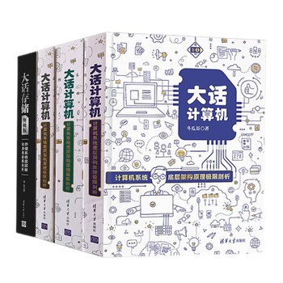

📖《大话计算机》是计算机硬件领域的经典之作，共三册。从CPU、内存到存储、网络，全面讲解计算机硬件的工作原理。作者张冬用通俗易懂的语言揭示了计算机系统的底层奥秘。
应该是我读过的最好的计算机硬件书，非常细致。
作为计算机专业的学生，我学过很多计算机原理课程，但直到读了这本书，才真正理解计算机是如何工作的。作者的讲解方式非常独特，从最基础的电路开始，一步步构建出完整的计算机系统。
书中最精彩的部分是对CPU工作原理的讲解。从指令集到流水线，从缓存到分支预测，每一个概念都用生动的比喻解释清楚。读完之后，再看操作系统、编译原理这些课程，会有完全不同的理解。这本书适合所有想深入理解计算机的人，无论是学生还是从业者。它让我对"计算机是怎么工作的"这个问题有了透彻的答案。